The development of West Orlando and the Parramore commercial district moved in tandem with the growth of the City of Orlando. The 1900 US Census did not list Orlando as an urban area since it had a population of less than 2500. By 1920, Orlando had the appearance of a progressive New South City: access to the Atlantic Coast Railroad, construction of airfields, public transportation, paved or brick streets, schools, libraries, a new post office with home delivery, department stores, movie theaters, parks, and beautification of white residential areas. It also had the racial infrastructure of the New South: segregation of public and commercial, educational, health, and entertainment spaces as well as laws designed to disfranchise African American voters.
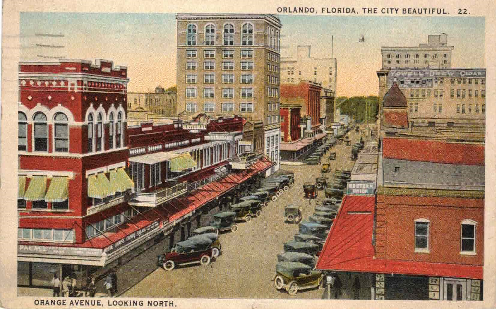
Postcard: “Orange Avenue Looking North,” 1922
In the West Orlando neighborhoods, progress followed a pattern that could be found in other Florida cities and cities across the South. Progress was measured in the establishment of churches, schools, and fraternal organizations and the development of businesses, trades, and professional practices. With the advent of the social and economic infrastructure of West Orlando, the emerging neighborhoods witnessed the rise of a Black middle class that in the words of Florida historian David Jackson, followed the lead of Booker T. Washington and provided a “quiet defiance” of Jim Crow. In daily life, the entrepreneurs, professionals, and trades acted as community leaders, role models, and liaisons to the white community. They were the church leaders and founders of fraternal organizations that provided charitable relief to the poorest members of the community. Their wives organized progressive era clubs to address community health issues, establish day care for working mothers, and teach vocational skills to young women. The progress can be visualized by mapping the data from a successive issue of the Orlando City Directory onto city maps over the period 1900 to 1945.
The Population and Geography of West Orlando:
Development of Black communities in West Orlando began with what is now the Callahan neighborhood. Originally platted by in the 1880s by Orlando’s 14th mayor, James B. Parramore, it was replatted in 1886 by white minister Rev. Andrew Hooper. Known as Hooper Quarters, the area originally housed small cottages for Black domestic workers. Over time it assumed other names, including Black Bottom and Pepperhill. Parramore, the commercial neighborhood was south of Callahan. In the 1880s the Holden neighborhood was platted for houses on the eastern edge and replatted in 1910 to include homes on the western edge. The Holden neighborhood was the site of homes of many prominent African Americans until Washington Shores was opened in the 1940s.
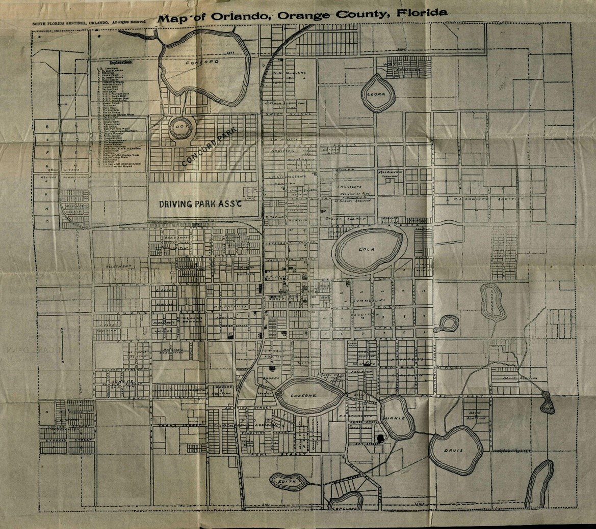
Orlando Map with red circle
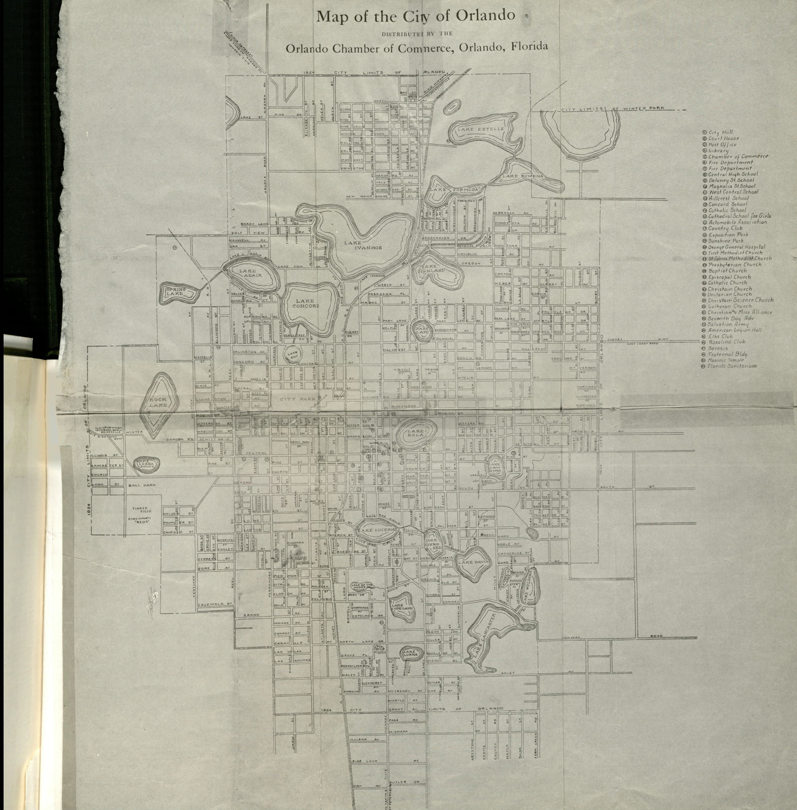
1924 Street Map of Orlando
This map documents the city’s boundaries in the same year the Orlando Zoning Commission was created.
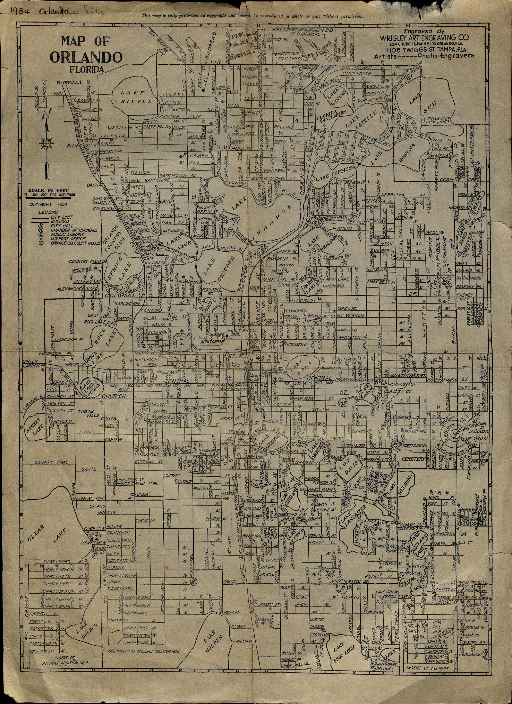
1934 Street Map of Orlando
The population of Orlando and the West Orlando neighborhoods rose steadily between 1900 and 1950 although after 1910, the ratio of Black to white populations remained steady.
Orlando Population, 1900 - 1950
Year
Total Population
White Population
"Negro" Population
% "Negro"
1900
2481
----
----
----
1910
3894
2113
1416
36.4
1920
9282
5530
2532
27.3
1930
27,235
18,520
7585
27.9
1940
35,735
25,303
10,470
29.3
1950
73,167
57,493
15,630
21.4
*In 1950, the U.S. Census Bureau changed the language from “Negro” to “Non-White.”
Black Entrepreneurs
Introduction
Entrepreneurship in Black communities filled basic needs for food, clothing, and housing. By the early 20th century, urban neighborhoods were also home to Black newspapers, entertainment venues, restaurants, baseball teams, automobile service stations and garages, the physical evidence of their entry into modern consumerism. While Black urban neighborhoods remained mired in poverty, the presence of African American entrepreneurs defied the expectations inherent in Jim Crow ideology: although most community members were defined as laborers, a significant and growing number engaged in commerce and trades and earned degrees for professional careers. Moreover, the community built the social infrastructure to sustain hopes, address demands for charity, and educate the next generation. The entrepreneurs provided much of the leadership and funding for these endeavors. Depending on their role as professionals, retail business owners, tradespeople, or laborers, African Americans interacted with the surrounding white community in different ways that shaped economic progress and general race relations.
Physicians in Parramore
Parramore, Orlando’s Black neighborhood, had two physicians by 1920, Dr. Jerry B. Callahan and Dr. William Monroe Wells. Physicians were particularly important for Black communities as access to medical care outside the community faced a variety of social and legal barriers. Black physicians also played a central role in the economic and social development of Black communities.
Becoming a physician in the Jim Crow South required extraordinary perseverance. As Thomas J. Ward Jr. observed in his 2005 book Black Physicians in the Jim Crow South, limited access to both elementary and high school education and family dependence on the financial contributions of older children to the household economy stood in the way of higher education and medical school for all but a few African Americans. Ward counted fourteen Black medical schools that appeared in the South between in the decades following the Civil War although only four produced any graduates and only two Howard Medical School and Meharry Medical School continue to the present.
Black physicians occupied a unique position in the Jim Crow South. They were generally the most education members of their local community and often respected by the white community. Their services were essential to the Black community as most white physicians refused to see Black patients and, when they did, African Americans were subjected to the humiliations inherent in Jim Crow segregation. As Ward notes, “…Black professionals were sometimes at odds with the needs and ideals of their larger community in regards to civil, economic, and political advancement. As an educated elite trapped within a subjugated caste, Black professionals in the Jim Crow South found themselves at the crux of the American dilemma between race and class.”
Parramore Physicians
According to the Orlando report on Black pioneers, the earliest physicians in Parramore included Dr. J.B. Hughes, Dr. J.B. Callahan, Dr. Henry Wooden, Dr. Samuel Daniels, Dr. William Monroe Wells, and Dr. I.S. Hankins Jr. The physicians who served the longest and are the best remembered were Drs. Callahan, Wells, and Hankins. They not only provided essential health care during the Jim Crow era, they invested in the expanding entrepreneurship in Parramore, and were quiet but persistent advocates for faith, full citizenship, and social equality.
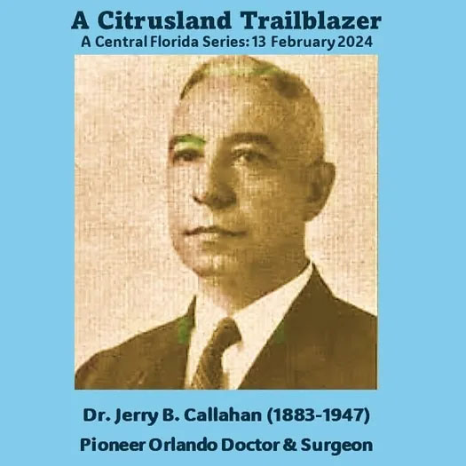
Image of J.B. Callahan
Dr. Jerry B. Callahan, a South Carolina native and graduate of Shaw Medical School, was the first Black physician in Orlando, arriving in 1907. A member of the Prince Hall Masons and the Baptist Church, Callahan also invested in the entrepreneurial future of Parramore. In 1922, he built a two-story brick building at the corner of West Church and Hughey Streets. His medical office and living quarters were located on the second floor of the building, while the ground floor provided commercial space for stores catering to the Black community. Dr. Callahan was interviewed by NAACP Field Secretary Walter White in the days following the Ocoee Massacre in November 1920 in which he commented on the loss of life. See Voting Rights, Voter Suppression digital exhibit. Much beloved in the community, the Callahan neighborhood was named in his honor, and the Callahan Neighborhood Community Center has a permanent exhibit on his life and influence.
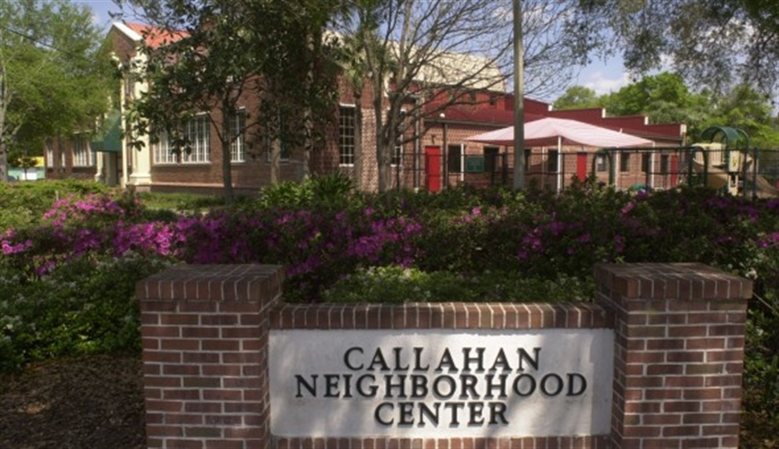
Dr. Jerry B. Callahan Exhibit Dedication Ceremony - Orlando Memory
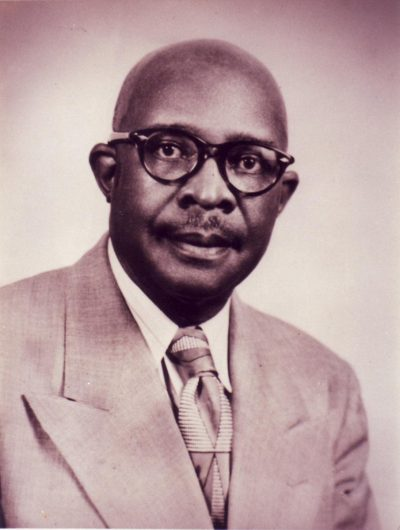
Dr. William Monroe Wells (1889-1957)
Dr. William Monroe Wells was born in Fort Gaines, Georgia, and received his medical degree from Meharry Medical College in Nashville, Tennessee. He arrived in Orlando in 1917. Over his 40 years of practice, he delivered a reported 5,500 babies. His office was located in the rear of his spacious house on South Street. He and his wife were members of the Mt. Olive AME Church. He was attending a church meeting in Lakeland, when he became ill and died on January 13, 1957. He is buried in Greenwood Cemetery. Dr. Wells opened the Wells’Built Hotel in 1924 on South Street. The hotel, which was listed in the 1956 edition of The Green Book, provided hotel rooms for Black travelers. On the ground floor of the hotel, Wells offered commercial space for Black businesses. Next door to the hotel, he built the South Street Casino, a Black social club. At the time of his death, Dr. Wells was a member of the Orlando Negro Chamber of Commerce.
Dr. Isaiah Sylvester Hankins (1895-1991)
Dr. Isaiah Sylvester Hankins was born in Orlando. His father was the first principal of Orlando Colored School (also known as Orlando Black) at the corner of Garland and Church Streets. As a boy he delivered the Metropolis newspaper on his bicycle. He attended the Johnson Academy to the 8th grade, the highest level offered at the time. In 1910 he graduated from Edward Waters Academy in Jacksonville; he received his medical degree from Howard Medical School and began practice in Orlando in 1926. Dr. Hankins’s wife, Yvette C. Hankins was a Registered Nurse. Dr. Hankins is remembered for his social activism and his commitment to Black home ownership and he provided funding for the creation of Washington Shores development. He constructed an Art Deco professional and commercial building at the corner of South and Parramore Streets in 1947. The historic marker on the building notes that was a member of the city board and the board of the local Red Cross chapter. He was instrumental in the integration of Orlando schools and was president of the Orange County Chapter of the NAACP.
Parramore Dentists
Early dentists in Parramore included Dr. Alphonso Lewis, Dr. Leroy Howell, Dr. Waldence Nixon, and Dr. L.C. Eccleston.
Image of Dr. Cecil L. Eccleston
Dr. Cecil L. Eccleston came to Orlando from Jamaica in the 1920s and practiced dentistry in Parramore until his death in 1948. Dr. Eccleston was an active member of St. John’s Episcopal Church. He donated land for the construction of the Eccleston-Callahan Memorial Hospital for Crippled Children. The hospital opened a school for the children it served in 1952. The site became the Eccleston Elementary School in 1958.
Parramore Dentists
Image of Mary Jane Johnson
Mrs. Mary Jane Johnson moved to Jonestown in 1923 from Sylvester, Georgia. She became a midwife in 1932 and delivered more than 1,500 babies before her career closed in 1983.
Image of Kitty Katurah B. Taylor
Mrs. Kitty Katurah B. Taylor graduated from the Hampton Training School for Nurses and did post-graduate work in the Lincoln Hospital Department of Pediatrics. She became staff nurse for the Orange County Health Department (13 years) and worked as a school nurse for Orange County Public Schools until 1956.
Image of Theresa Manigault Walton
Mrs. Theresa Manigault Walton joined the staff of Orange County General Hospital in 1945 in the Colored Ward in the basement of the building. A graduate of Jones High School and Florida A&M University also took classes at Johns Hopkins University and the Veterans Hospital in Tuskegee, Alabama. In 1990, she retired from ORMC as assistant to the senior vice president and CEO of the hospital.
Commercial Business Owners and Managers
Entrepreneurial Pioneers
In October 1981, the Orlando Office of Human Relations issued a report titled “Early Pioneers of Orlando’s Black Community, 1880s-1920. The report, which did not claim to be comprehensive, was based on interviews with 25 “Black Senior Citizens” and descendants of early Black pioneers. The list, which is presented here in a comprehensive table provides a snapshot of the businesses and services offered in the West Orlando community. Businesses located between Orange Avenue and the railroad tracks often served both Black and white customers.
Black Businesses, 1900 to 1920
Business Owner
Type of Business
Location
J.A. Colyer & Charlie Williams
Tailor
W. Church St. between Orange Ave and railroad
Milo Cooper
Tonsorial Parlor
E. Pine St.
Wesley Cooper
Saloon
West Church St. between Orange Ave. and railroad
Rev. Alfred Crooms
Print Shop & Bookstore
Corner of Bryan and Washington Streets
Rev. Moses Crooms Jr.
Drayman
Corner of Lincoln and Jefferson Streets
Walter and Annie Crooms
Dry Goods Store
W. Church St between Terry and Division Streets
----- Douglas
Mattress Maker
Terry Street between Central and Washington Streets
---- Freeman
Pharmacy
West Church Street
H. B. Griffin
Barber Shop
Corner of Jackson and Division Streets
Oliver Grimes
Dry Cleaner
Terry Street between Jackson and South Streets
John Grover
Livery Stable
Bryan Street between Central and Washington St.
John Grover
Livery Stable
Bryan Street between Central and Washington St.
M.P. Hatcher
Grocery & Clothing (also Real Estate and Insurance)
S. Parramore
Gus Henderson
Publisher, newspaper "The Christian Advocate" (distributed across the South)
Corner Division and Pine St.
Pearl Henry
Boarding House
W. Church near Orange Ave.
James Hopkins Sr.
Shoemaker
W. Church St. between Orange Ave. and railroad
Ed Jackson
Barber and Photographer
Orange ave between Church and Pine Streets
Joe and Clara James
Grocery Store
Corner Chatham and Livingston Streets
---- Jewitt
Grocery Store
Corner of Chatham and Washington Streets
Gabe Jones
Merchant
Orange Avenue
Will Jordon
Grocery Store
Corner of Washington and Bryan Streets
Charlie Robinson
Grocery Store
Corner of N. Westmoreland and Robinson Streets
Jim Robinson
Cleaners
E. Pine Street
Fred Rutherford
Barber Shop
Boone St. off Church St.
Charlotte Shackleford
Restaurant
Corner of Division/South St.
Edward Stone
Funeral Home (later Stone & Butler)
Church St. between Terry and Division Streets
William Taylor
Pharmacy
Corner of Church & Division
John Thomas
Barber Shop
Bryan St. between Church and Pine Streets
Elijah Whitehead
Barber Shop
Orange Avenue
J.W. Williams
Pharmacy
W. Church Street between Terry and Division Streets
*long list, provide dropdown version*
Entrepreneurs, 1920-1945
Hankins Professional Building 643-647 W. South St.
Image of Callahan Professional Building
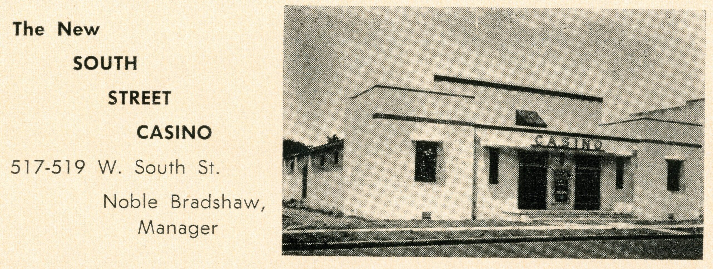
South Street Casino, Social Club built by Dr. W. Monroe Wells in the 1920s.
Entertainers who performed at the Casino included Count Basie, Duke Ellington, and Ella Fitzgerald. Marion Price, A.C. Price, and Noble Bradshaw managed the Casino at different times. The South Street Casino was destroyed in 1987. Dr. Wells’s home was moved to the site of the South Street Casino, next to the Wells’ Built Museum.
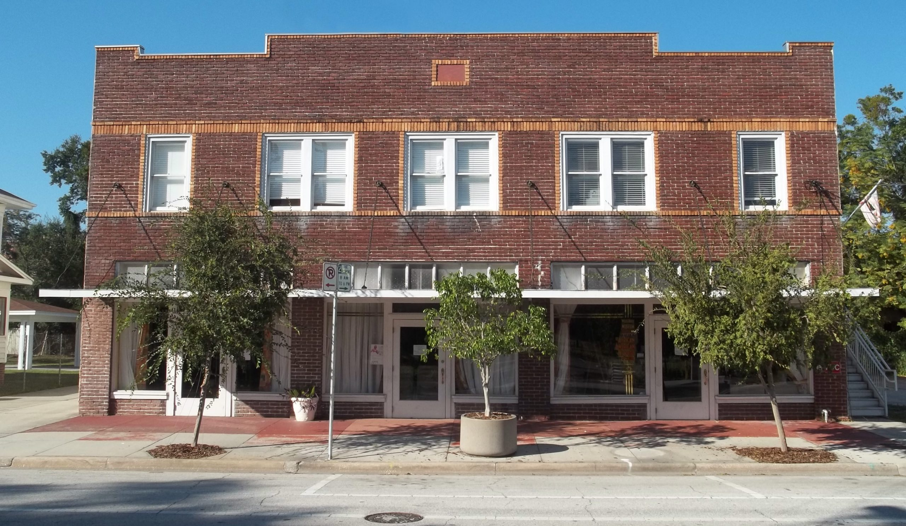
Wells Built Museum, 511 W. South Street
Originally the Wells Built Hotel, with rooms on the second floor and commercial spaces on the ground floor. The hotel was constructed by Dr. W. Monroe Wells to create hotel space for Black travelers during the Jim Crown era. The hotel was listed in the 1956 edition of The Green Book, a travel guide for Black travelers. Count Basie, Thurgood Marshall, Ella Fitzgerald, and Jackie Robinson stayed at the hotel. The hotel, which closed in 1970 to be reborn as the Wells’ Built Museum of African American History and Culture in 2000 is listed on the National Register of Historic Places.
Image Mayhouse Furniture Store
Image Brinson’s Funeral Home
Image Wallace Beauty Mill
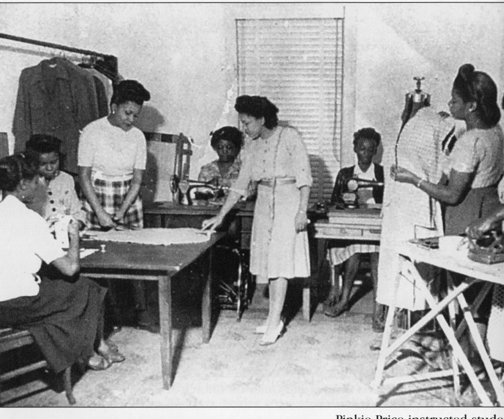
Price’s School of Sewing and Tailoring, 578 W. Church Street
Pinkie Price (center) also worked at the Lincoln Theater, was a hatcheck girl at the South Street Casino, and taught public school for 20 years. She knew a number of the entertainers who performed at the South Street Casino.
Trades
Cooperatives and labor organizations; skilled and unskilled labor.
Role of Entrepreneurs in Community Life
Churches:
Institutional connections across the state and the nation provided networks for news and organization on behalf of social justice. Ministers were the most tightly bound to the community; commanded respect from whites, could act as liaisons to power. Often well educated. More successful entrepreneurs and professionals were often leaders in the churches.
Mt. Zion Missionary Institutional Church
Shiloh Baptist Church, 1899, Rev. A. Arnett, 604 West Jackson Street, connection to Martin Luther King
Ebenezer United Methodist Church, 594 West Church St. 1872, wooden structure at corner of Church and Terry Streets; 1920s brick structure; 1971, corner of Goldwyn Avenue and Monte Carlo
Mt. Olive AME Church
St. John’s Episcopal Church
Mt. Pleasant Missionary Baptist Church, 314 S. Parramore Avenue, 1919, Rev. J.H. Armstead; moved to Bruton Boulevard at Prince Hall Boulevard
Carter’s Tabernacle CME Church
Fraternal and Charitable Organization
Prince Hall Masons
Oddfellows
Knights of Pythias
Women’s organizations.
World War I
Influenza Pandemic:
Great Depression:
New Deal: white women first
Black Unemployment
Social Security does not include farm workers and domestic workers, jobs held by most African Americans
Public housing and redlining
World War II
Orlandoans recognized the future role of the United States in World War II long before the attack by the Japanese on Pearl Harbor. Anticipating the for air pilot training bases, historian Eve Bacon pointed to the quiet acquisition of property and the construction of three runways of 2500 feet each by 1940. Florida quickly emerged as a center for land, air, and sea forces. In addition, Orlando played a critical role in the development of DDT insecticides. Experimental research took place at the Parramore and Livingston Street Experiment Station before the headquarters was moved to “a large two-story structure formerly known as the ‘Army Building’ at the Fair Grounds.”
Page 1: “Summary of DDT Experiments”
US Federal Documents Collection, University of Florida
Summary of DDT experiments on insects that affect man and animals (ufl.edu)
As in previous wars, African Americans lent their support to all phases of the war—joining all branches of the military except the U.S. Marines, which did not permit enlistment of Black recruits, work in defense industries, and support for war bonds and national programs to grow family gardens and collect items such as paper and metal. As in other wars Black soldiers and sailors and their families hoped their service would result in the full benefits of citizenship and end segregation and disfranchisement. In 1942, the Pittsburgh Courier, a Black-owned newspaper with a national circulation, published a letter by James G. Thompson calling a double victory—Victory abroad against the nation’s enemies and Victory at home against aggression, slavery and tyranny.
As the war drew to a close, white Floridians worried about the consequences of the training and deployment of Black soldiers. They also viewed the Double V Campaign as a potential spark for racial violence as Black veterans returned home. The 1944 map of Orlando is a U.S. Army map developed for the deployment of troops in the event of racial violence at the end of World War II. Similar maps were developed for Tallahassee, Jacksonville, Tampa, and Miami. The maps accompanied detailed outlines of local police and sheriff capabilities and plans for closing off Black neighborhoods and controlling public information. These maps and plans were “Secret” until 1993.
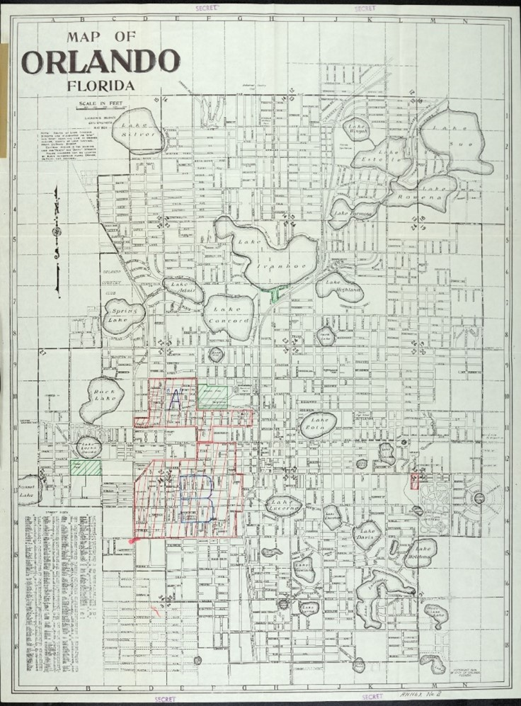
U.S. Army Deployment Map, Orlando, 1944
Florida State Archive, Tallahassee
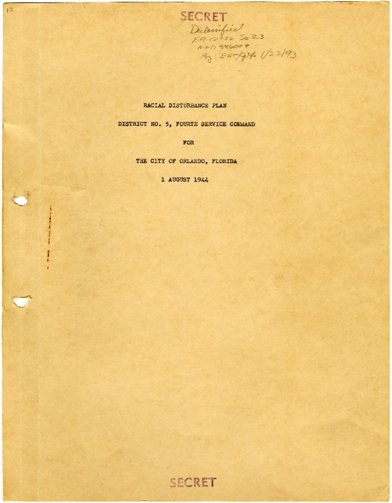
Cover page for the Orlando
racial disturbance plan, 1944
The anticipated riots did not occur in any Florida city. For an article on race relations in Tallahassee and the creation of that city’s military plan see Jon Evans, “The Origins of Tallahassee’s Racial Disturbance Plan: Segregation, Racial Tensions, and Violence during World War II,” Florida Historical Quarterly 79, no. 3 (Winter 2001): 346-364.
Section
The creation of the Greenwood Cemetary destroyed the low-income housing in the area from a decade before and added to the western migration.
Shift between sections of Chamber of Commerce maps of Orlando showcasing this major change between 1926 and 1936.